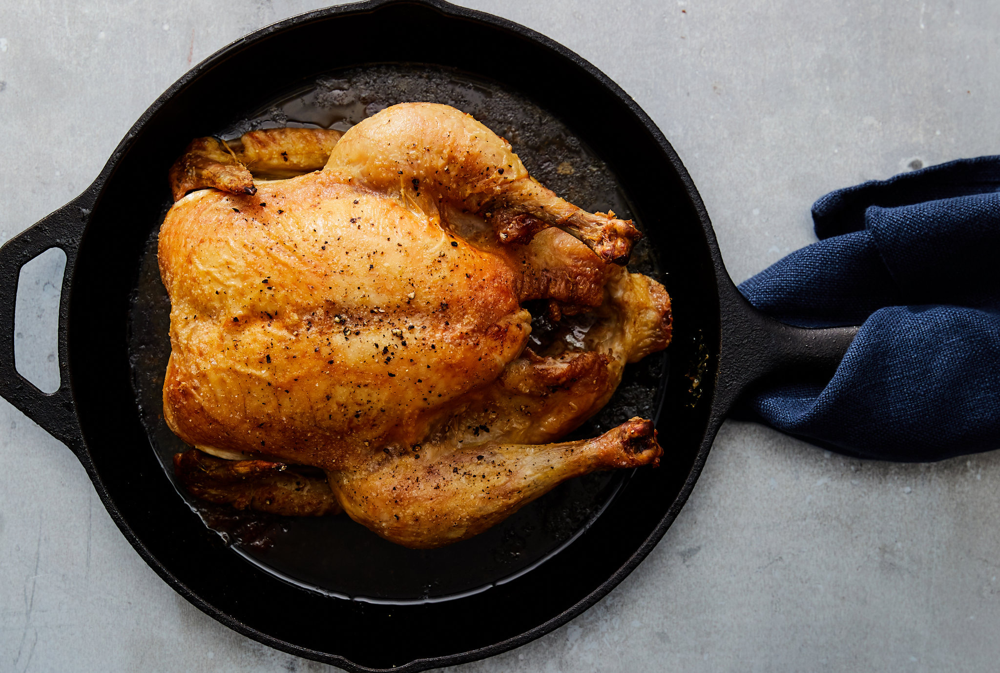

This is a delicious, juicy, crispy skinned chicken that will pull apart at the bone
and make you question that rotisserie chicken you bought at the grocery store last week.
If you can move past the amount of smoke this will create in your house (gas mask recommended), get ready to taste the best roasted chicken you've ever tasted!
Adding some chunks of fresh lemon and several whole garlic cloves in the cavity is recommended for some savory goodness.
- 1 whole chicken, 3 to 4 pounds, trimmed of excess fat
- 3 tablespoons extra virgin olive oil
- Salt and freshly ground pepper
- Put a cast iron skillet on a low rack in the oven and heat the oven to 500 degrees. Rub the chicken all over with the oil and sprinkle it generously with salt and pepper
- When the oven and skillet are hot, carefully put the chicken in the skillet, breast side up. Roast for 15 minutes, then turn the oven tempurature down to 350 degrees.
Continue to roast until the bird is golden brown and an instant-read thermometer inserted into the meaty part of the bird thigh reads 155 to 165 degrees
- Tip the pan to let the juices flow from the chicken's cavity into the pan. transfer the chicken to a platter and let it rest for at least 5 minutes. Carve and serve
Tip: Use the juices/fat that cooks off of the chicken to make chicken stock